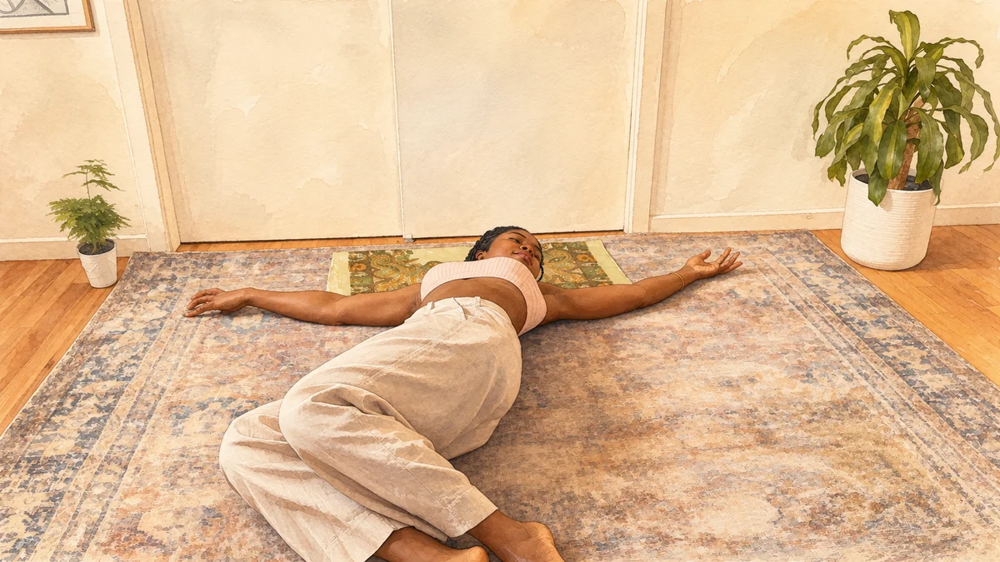

Tango with Ease
Take the practice home.
A little more ease for your next tango night.
Keep exploring after the workshop with seven days of gentle somatic movement. Make a little room to notice how you feel, on and off the dance floor.
Explore the movement playlist Subscribe to Moving Skillfully on YouTube
A little curiosity. Your own pace.
Let the movements be small and comfortable. Pause when you need to, and notice what feels different before you return to the dance floor.